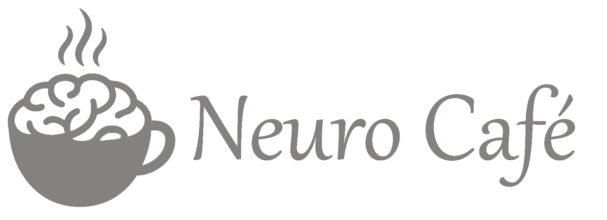
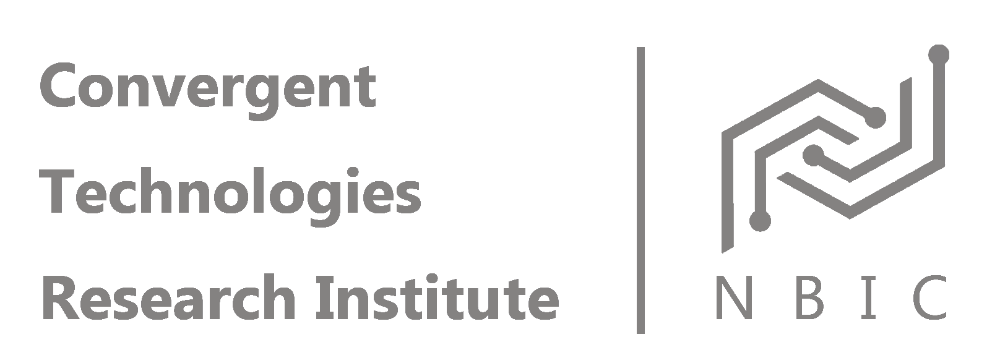
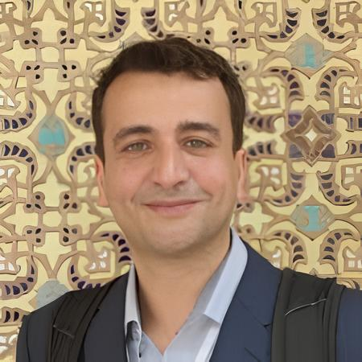
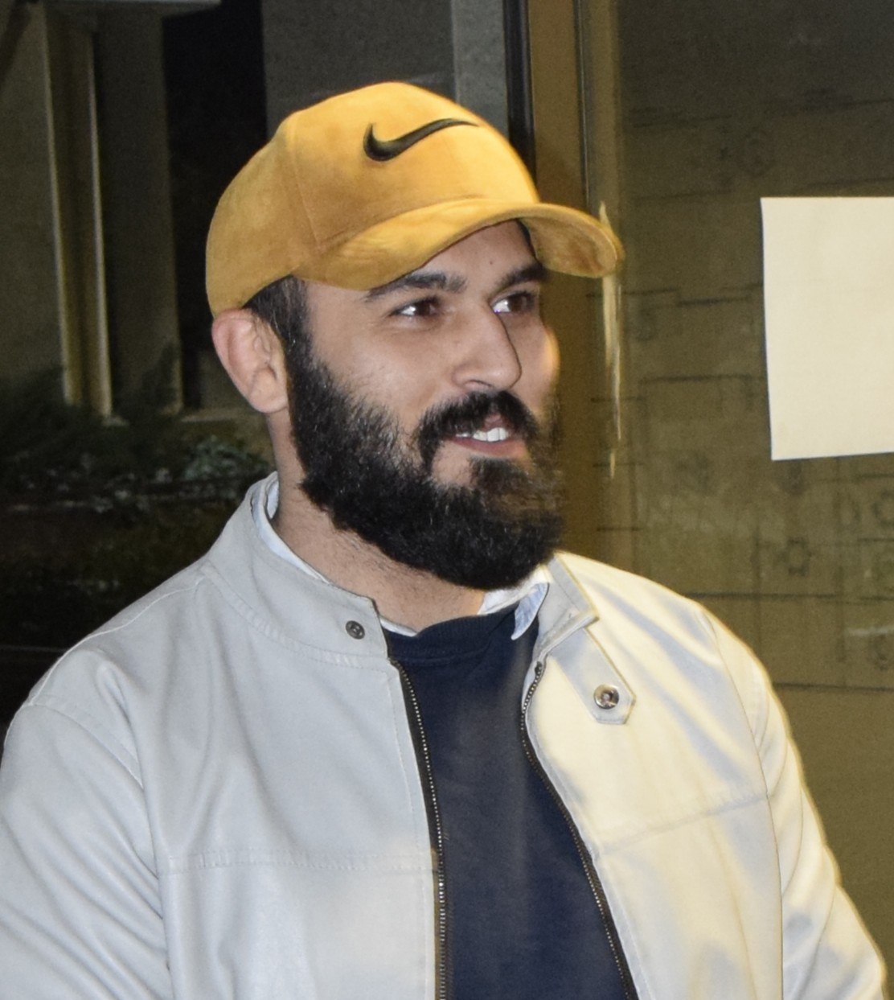
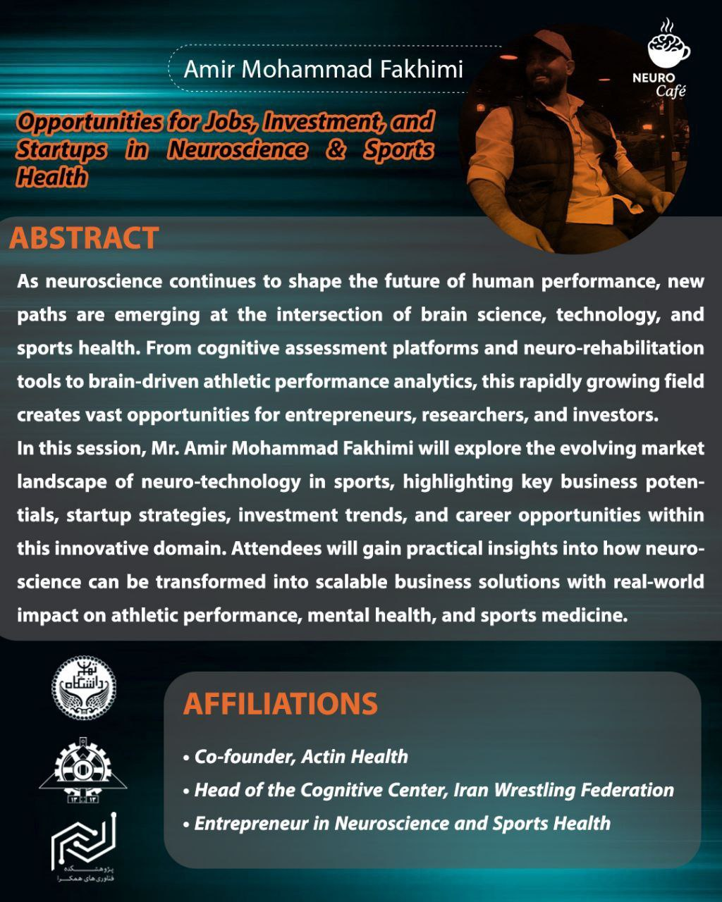
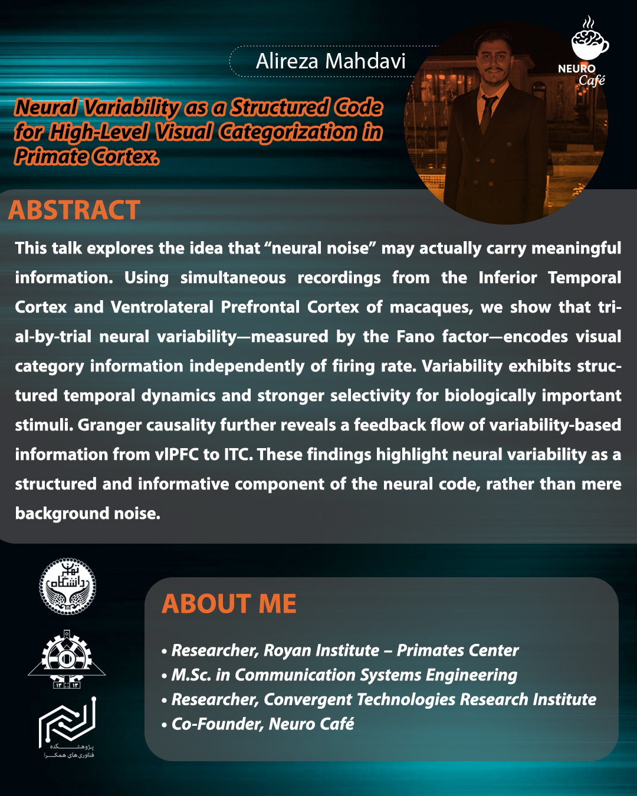

Neuro Cafe Team


Neurocafe is an interdisciplinary community at the University of Tehran that brings together researchers, students, clinicians, and curious minds through thoughtful discussions, workshops, and intimate gatherings exploring the brain and human experience.
NeuroCafe is for everyone.
”
NeuroCafe is where you can take an interdisciplinary journey into the brain.
”NeuroCafe is the best way to be introduced to neuroscience.
”NeuroCafe is the first platform to open an interdisciplinary perspective on neuroscience.
”
NeuroCafe is a bridge between industry and education.
”Recent work reveals that glial cells play an active role in shaping episodic memory circuits.
Read the paper →Critical developmental windows shape social behavior circuits in the prefrontal cortex.
Read the paper →Moments from our gatherings, conversations, and intellectual life.




Become part of a community that believes great science happens between people.
Become a Member